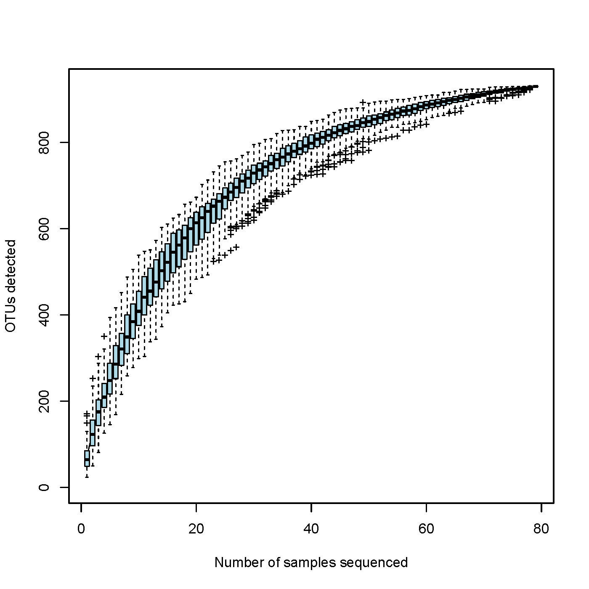
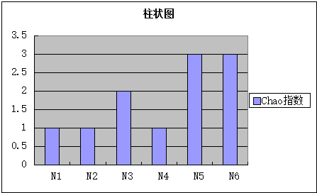

物种累积曲线( species accumulation curves)是用于描述随着样品量的加大物种增加的状况，是调查样品的物种组成和预测样品中物种丰度的有效工具，在生物多样性和群落调查中，被广泛用于样品量是否充分的判断以及物种丰富度( species richness) 的估计。因此，通过物种累积曲线不仅可以判断样品量是否充分，在样品量充分的前提下，运用物种累积曲线还可以对物种丰富度进行预测。
下图为OTU物种累积曲线示例图：

图4-1
注：横坐标：样本量；纵坐标：抽样后OTU数目。结果反映了持续抽样下新OTU（新物种）出现的速率。在一定范围内，随着样本量的加大，若曲线表现为急剧上升则表示群落中有大量物种被发现；当曲线趋于平缓，则表示此环境中的物种并不会随样本量的增加而显著增多。利用物种累积曲线可以作为对样本量是否充分的判断，曲线急剧上升表明样本量不足，需要增加抽样量；反之，则表明抽样充分，可以进行数据分析。
结果输出区域
